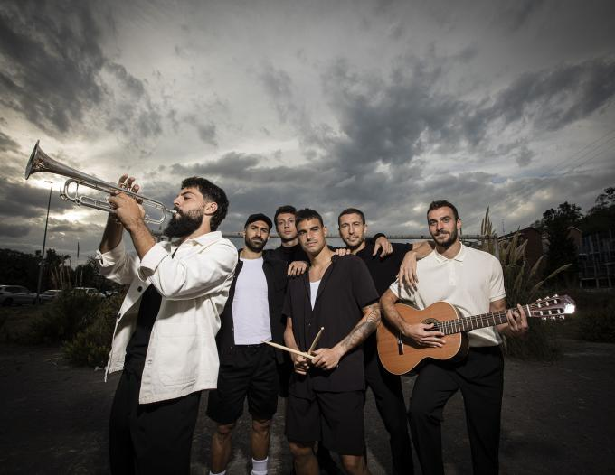

ORSAI
Athletic Club
El origen de todo está en la pretemporada 2019-20, y de los seis componentes del grupo, tan solo De Marcos se defendía a la guitarra. Sin ninguna pretensión profesional, empezaron a ensayar y tomaron clases para mejorar la técnica. La cosa cogió forma cuando en las navidades de 2019, participaron en un concierto de la televisión pública vasca con su versión de "Lau Teilatu" de los míticos Itoiz y al público le gustó.
Leer más Bizkaia
Instalaciones de Lezama